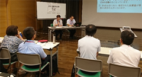
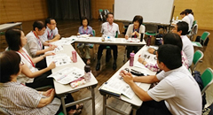

県南地域での助け合い活動について取り組みを交流
埼玉県生活協同組合連合会
7月31日（火）14時から、蕨市立文化センター「くるる」（多目的ルーム）で5生協20人が参加して、助け合い活動などについて報告、交流しました。
目的
●互いの活動を知ることで、地域の中で顔の見える関係をつくり、情報交換ができるようになることを目指します。
●専門的なこと（医療関係、介護関係など）について、相談できる関係づくり（活動と事業が一緒に）ができる場を目指します。
●各生協の強みを活かした地域の中でのつながり合いのイメージ交流をおこないます。
参加
コープみらい2、パルシステム埼玉3、生活クラブ埼玉1、医療生協さいたま12、埼玉県生協連2
1．各生協の取り組み報告
まず、参加した5生協(埼玉県生協連含む)から、資料を使って報告をおこないました。報告の中では、各生協の助け合い活動の概要についての報告、今回対象となった川口市・蕨市・戸田市を中心とした活動実態、自治体や生協、市民団体とつながりながら地域で展開している取り組みなどについて報告がありました。埼玉県生協連からは2000年に策定した福祉政策の内容、新しい総合事業について検討し、確認してきたことを中心に報告をおこないました。
2．交流
後半は、2つのグループにわかれて交流をおこないました。取り組み報告を受けての質疑、意見交換から始まり、県南地域での具体的な活動事例の共有と、一緒にできること、地域でつながるために必要なことなどについて話し合いました。また、事務局が準備した川口市・蕨市・戸田市・さいたま市南部地域の地図を使って、地域内の生協施設、活動拠点（組合員活動含む）などを共有しました。
3．埼玉県生協連に求めること
交流の中では、各市町村に訪問する時に、生協の活動を報告できる生協の資源、福祉活動などの状況のわかるマップが必要ではないかとの意見があがりました。今後の検討課題として受け止め、東京都生協連が作成している福祉マップなどを調査し、具体的なすすめ方を検討していきます。